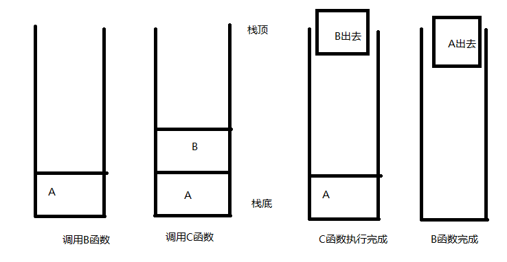

开篇：上次我们学习了基本的数组结构。
今天，我们来学习另一个线性的数据结构，栈。
栈这种数据结构，无时无刻不在我们的身边。是种极其重要的数据结构。
所以，什么是栈呢？(不要废话了，快说)
先来看我们生活中，比如我们经常操作的word文档。
我们比如写入四个字， (天气真好)。
我们不想要了这句话，Ctrl+Z 回撤掉我们所打的。你会很自然发现，消失的顺序会是，好->真->气->天。
别急。 我们再来个例子。
比如那我们的函数调用，
计算机需要有个系统栈来记录我们的函数调用。
public void A()
{
B();
}
public void B()
{
C();
}
public void C()
{
//....
}A为我们的主函数，当A调用B的时候，进入B函数时，会在A函数中断的位置把函数地址信息压入到系统栈里。
此时B函数又在用掉C函数，此时又会在B函数中断的位置把函数地址信息压入到系统栈里。
此时C执行完后，该怎么办呢。此时系统栈里会取出栈顶元素为返回的地址，为B，程序便正确的回到B处。
同样的。B执行完,系统栈又会取出栈顶元素为返回的地址，为A，程序便正确的回到A处。
此时我们正完成了我们的函数调用。
如我们的图所示:

所以。栈（stack）又名堆栈，它是一种运算受限的线性表。其限制是仅允许在表的一端进行插入和删除运算。
插入和删除都在栈顶这一端操作。
包括我们的经常使用编程的Ide，会自动检查括号的匹配等等。都是基于栈的结构。
现在，我们基于我们上次的线性数组。来实现我们的自定义栈结构。
我们让我们的结构实现我们的泛型IStack接口来实现。
分别有pop出栈，push入栈。判断是否为空和清空操作等。
/// <summary>
/// 栈
/// </summary>
/// <typeparam name="T"></typeparam>
public interface IStack<T>
{
void Push(T value);
T Pop();
T Peek();
bool IsEmpty();
void Clear();
}
public class Stack<T> : IStack<T>
{
private Array<T> Data;
public Stack(int capacity=20)
{
this.Data = new Array<T>(capacity);
}
public void Clear()
{
this.Data.SetEmpty();
}
public bool IsEmpty()
{
return this.Data.GetSize() == 0;
}
public T Peek()
{
return this.Data.Search(this.Data.GetSize());
}
public T Pop()
{
return this.Data.Delete(this.Data.GetSize());
}
public void Push(T value)
{
this.Data.Add(value);
}
}
由此可见。这是一个重要的数据结构。
届时，我们来看看leetcode上的一道典型的链表题目。20题
题目是这样的。
给定一个只包括 '('，')'，'{'，'}'，'['，']' 的字符串，判断字符串是否有效。
有效字符串需满足：
左括号必须用相同类型的右括号闭合。
左括号必须以正确的顺序闭合。
注意空字符串可被认为是有效字符串。
先给出代码(C#)。
public class Solution {
public bool IsValid(string str) {
var stack = new Stack();
for (int i = 0; i < str.Length; i++)
{
if (str[i] == '[' || str[i] == '{' || str[i] == '(')
stack.Push(str[i]);
else if(str[i] == ']' || str[i] == '}' || str[i] == ')')
{
if (stack.Count == 0)
return false;
var top = (char)stack.Pop();
if (str[i] == ')' && top != '(')
return false;
if (str[i] == ']' && top != '[')
return false;
if (str[i] == '}' && top != '{')
return false;
}
}
return stack.Count==0;
}
}使用的Stack类为我们的C#本身为我们提供的栈结构。
本题目是 [，(,,{ 三种括号的匹配。
我们判断。如果是这三种，我们就相应的入栈。当遇到他们所匹配的结尾括号时，],),}时候。
便相应的出栈。如果不是他们对应的标签。便是不符合要求的。当一一遍历出栈后。
如果栈为空时。便说明便是符合要求的。
今天我们的栈就到这里啦，下一次，我们来实现另一种线性结构,队列。